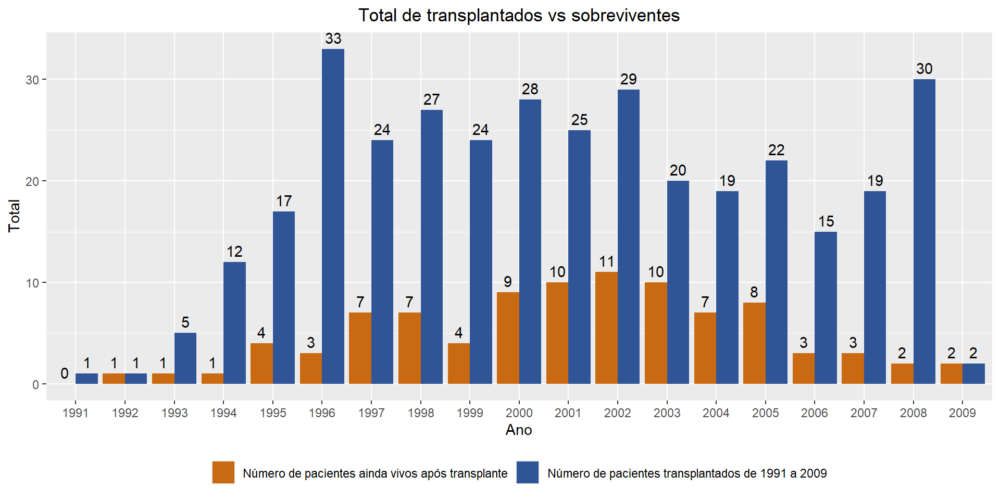
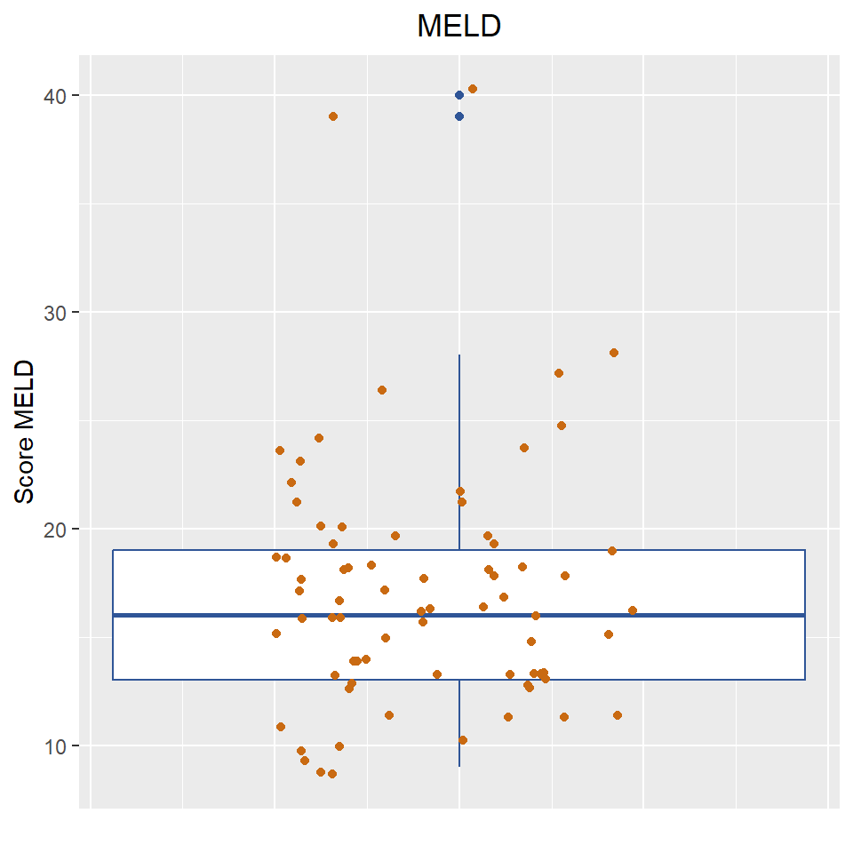
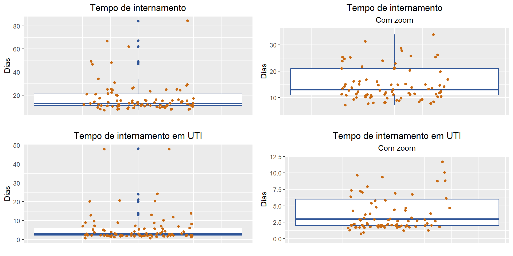
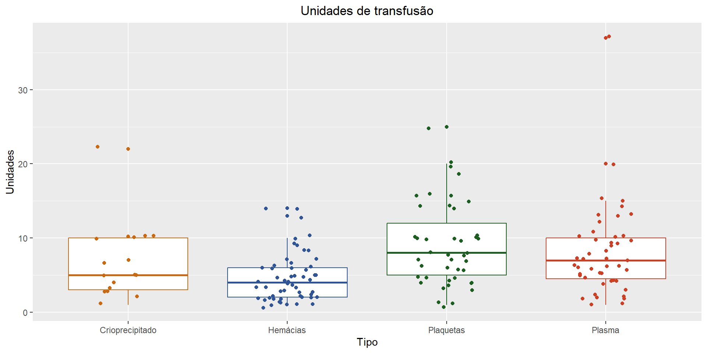
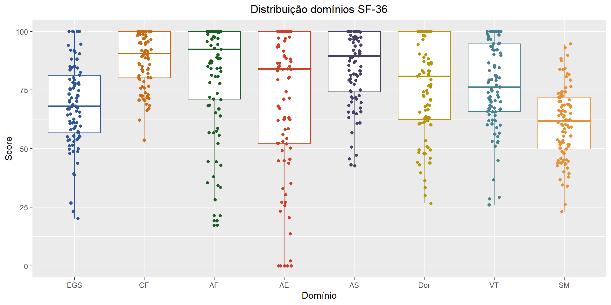

Introdução
Em um hospital da região Sul do Brasil, entre os anos de 1991 e 2009, 353 pacientes realizaram transplante de fígado cadavérico. Anos após a realização do transplante, esses pacientes foram procurados e tiveram sua qualidade de vida avaliada. Este estudo de caso busca analisar o perfil clínico desses pacientes, de acordo com os dados obtidos em prontuário, e comparar sua qualidade de vida com índices nacionais e regionais da época.
Análise descritiva dos dados
Transplantados versus sobreviventes
De um total de 353 transplantados, apenas 93 (26.3%) ainda se encontravam vivos no momento do estudo. A mortalidade média por ano é de 32%.
Resumo dos dados
| Variável | Média | Desvio Padrão | Mediana | Mínimo | Máximo |
|---|---|---|---|---|---|
| Idade hoje | 57.84 | 15.58 | 57 | 25 | 100 |
| Idade no transplante | 41.03 | 14.99 | 41 | 9 | 78 |
| Tempo para seguimento (Anos) | 16.81 | 3.70 | 17 | 9 | 26 |
| IMC | 24.46 | 4.50 | 24.50 | 14.30 | 40.10 |
| Score MELD | 17.13 | 5.78 | 16 | 9 | 40 |
| Tempo de operação - Minutos | 398.45 | 106.95 | 360 | 240 | 690 |
| Tempo de isquemia - Horas | 6.88 | 2.89 | 6.33 | 1.33 | 13.75 |
| Tempo de internamento UTI - Dias | 5.64 | 7.93 | 3 | 1 | 48 |
| Tempo de internamento Total - Dias | 17.71 | 13.26 | 13 | 7 | 84 |
Tempo

Podemos observar boa simetria nos três gráficos referentes ao tempo, evidenciado também pela baixa diferença da média e da mediana na tabela. Os pacientes estão bem distribuídos com relação às suas idades no transplante.
IMC

| Categoria de IMC | Faixa | Total | % |
|---|---|---|---|
| Abaixo do peso | Abaixo de 18.5 | 8 | 9.30% |
| Eutrófico | 18.5 - 24.9 | 42 | 48.84% |
| Sobrepeso | 25 - 29.9 | 28 | 32.56% |
| Obesidade grau I | 30 - 34.9 | 6 | 6.98% |
| Obesidade grau II | 35 - 39.9 | 1 | 1.16% |
| Obesidade grau III | 40 ou mais | 1 | 1.16% |
Observando tanto o gráfico quanto a tabela, temos que 90.70% dos pacientes se encontram no máximo em Sobrepeso, e 48.84% estão na faixa ideal de peso.
MELD

A distribuição do MELD mostra que 75% dos transplantados tiveram o Score até 19 pontos. Somente 2 (2.15%) pacientes tiveram Score acima de 30. Excluindo os outliers, a distribuição dos valores se mostra simétrica.
Tempo de Cirurgia

É interessante notar que 50% das cirurgias tiveram até 360 minutos de cirurgia, com uma amplitude de 120 minutos entre a mediana e o valor mínimo. Os demais 50% estão mais dispersos, com uma amplitude de 330 minutos entre o valor máximo e a mediana.
Tempo de Isquemia

O tempo de isquemia está bem distribuído, de acordo com os valores obtidos. Não há valores discrepantes relevantes, e pode-se observar pouca simetria.
Tempo de internamento

No geral, o tempo de internação dos pacientes, tanto de internação geral quanto em UTI, foi baixo. 75% dos transplantados tiveram tempo de internação de até 20 dias, aproximadamente. Na UTI, a mesma proporção de pacientes teve em média 6 dias de internamento. Considerando os outliers, há transplantados que atingiram 48 dias de UTI e 84 dias no internamento geral.
Variáveis categóricas
Gênero e tipo sanguíneo

Acima, proporções de gênero e tipo sanguíneo não demonstram nada atípico.
Child-Pugh

A categoria B de Child-Pugh foi a de maior destaque. Ainda assim, 59.0% dos pacientes estão na categoria de maior risco.
Etiologia
| Etiologia | Total |
|---|---|
| VHC | 23 (24.7%) |
| Alcool | 18 (19.4%) |
| VHB | 18 (19.4%) |
| HAI | 16 (17.2%) |
| HCC | 11 (11.8%) |
| Criptogenica | 6 (6.5%) |
| CEP | 4 (4.3%) |
| Budd chiari | 3 (3.2%) |
| CBP | 2 (2.2%) |
| Def alfa 1 antitripsina | 2 (2.2%) |
| Adenoma hep gigante - secretor de renina | 1 (1.1%) |
| Doenca de wilson | 1 (1.1%) |
| MTX | 1 (1.1%) |
| NASH | 1 (1.1%) |
| Polineuropatia amiloidotica familiar | 1 (1.1%) |
| Sd allagile | 1 (1.1%) |
| Etiologia | Total |
|---|---|
| VHC | 23 (24.7%) |
| Alcool | 18 (19.4%) |
| VHB | 18 (19.4%) |
| HAI | 16 (17.2%) |
| HCC | 11 (11.8%) |
| Criptogenica | 6 (6.5%) |
| Outro | 6 (6.5%) |
| CEP | 4 (4.3%) |
| Budd chiari | 3 (3.2%) |
| CBP | 2 (2.2%) |
| Def alfa 1 antitripsina | 2 (2.2%) |
As tabelas acima mostram as condições que eventualmente levaram à necessidade do transplante. As duas tabelas representam o mesmo dado, mas a da direita condensa as causas com aparição única em “Outro”. É importante ressaltar que 15 transplantados apresentavam mais de uma condição.
Comorbidades preexistentes
| Comorbidades | Total |
|---|---|
| Sem comorbidades | 64 (68.8%) |
| DM2 | 9 (9.7%) |
| HAS | 7 (7.5%) |
| Hipot | 3 (3.2%) |
| Osteop | 2 (2.2%) |
| RCUI | 2 (2.2%) |
| Cardiopatia chagasica | 1 (1.1%) |
| Def prot c e s | 1 (1.1%) |
| Depressao | 1 (1.1%) |
| DSLP | 1 (1.1%) |
| Dvp 14d | 1 (1.1%) |
| Epilepsia | 1 (1.1%) |
| Hcc - hepatectomia | 1 (1.1%) |
| HIV | 1 (1.1%) |
| Lma (qtx 1989) | 1 (1.1%) |
| Nefrolitiase | 1 (1.1%) |
| Neuropatia perif por def b12 | 1 (1.1%) |
| Obesidade | 1 (1.1%) |
| Psoriase | 1 (1.1%) |
| Tx renal 1998 por irc | 1 (1.1%) |
| Tx renal iv 1984 (nefrite) e 2002 (rejeicao) | 1 (1.1%) |
| Ulcera gastrica | 1 (1.1%) |
| Valvopatia | 1 (1.1%) |
| Comorbidades | Total |
|---|---|
| DM2 | 9 (31.0%) |
| HAS | 7 (24.1%) |
| Hipot | 3 (10.3%) |
| Osteop | 2 (6.9%) |
| RCUI | 2 (6.9%) |
| Cardiopatia chagasica | 1 (3.4%) |
| Def prot c e s | 1 (3.4%) |
| Depressao | 1 (3.4%) |
| DSLP | 1 (3.4%) |
| Dvp 14d | 1 (3.4%) |
| Epilepsia | 1 (3.4%) |
| Hcc - hepatectomia | 1 (3.4%) |
| HIV | 1 (3.4%) |
| Lma (qtx 1989) | 1 (3.4%) |
| Nefrolitiase | 1 (3.4%) |
| Neuropatia perif por def b12 | 1 (3.4%) |
| Obesidade | 1 (3.4%) |
| Psoriase | 1 (3.4%) |
| Tx renal 1998 por irc | 1 (3.4%) |
| Tx renal iv 1984 (nefrite) e 2002 (rejeicao) | 1 (3.4%) |
| Ulcera gastrica | 1 (3.4%) |
| Valvopatia | 1 (3.4%) |
| Comorbidades | Total |
|---|---|
| Outro | 17 (58.6%) |
| DM2 | 9 (31.0%) |
| HAS | 7 (24.1%) |
| Hipot | 3 (10.3%) |
| Osteop | 2 (6.9%) |
| RCUI | 2 (6.9%) |
31.2% das pessoas apresentaram comorbidades anteriores ao transplante, com suas frequências listadas acima. Novamente, as três tabelas são equivalentes, porém em diferentes níveis de detalhamento. 7 pessoas acumulavam mais de uma comorbidade.
Complicações da Cirrose
| Complicações | Total |
|---|---|
| Sem complicações | 35 (37.6%) |
| Ascite | 28 (30.1%) |
| HDA | 24 (25.8%) |
| Encefalopatia | 15 (16.1%) |
| PBE | 8 (8.6%) |
| HCC | 4 (4.3%) |
| Prurido | 4 (4.3%) |
| Sd hepatorrenal | 2 (2.2%) |
| Varizes esofago | 2 (2.2%) |
| Hepatite fulminante | 1 (1.1%) |
| Ictericia | 1 (1.1%) |
| Sd hepatopulmonar | 1 (1.1%) |
| Trombose veia porta (recanalizada) | 1 (1.1%) |
| Complicações | Total |
|---|---|
| Ascite | 28 (48.3%) |
| HDA | 24 (41.4%) |
| Encefalopatia | 15 (25.9%) |
| PBE | 8 (13.8%) |
| HCC | 4 (6.9%) |
| Prurido | 4 (6.9%) |
| Sd hepatorrenal | 2 (3.4%) |
| Varizes esofago | 2 (3.4%) |
| Hepatite fulminante | 1 (1.7%) |
| Ictericia | 1 (1.7%) |
| Sd hepatopulmonar | 1 (1.7%) |
| Trombose veia porta (recanalizada) | 1 (1.7%) |
| Complicações | Total |
|---|---|
| Ascite | 28 (48.3%) |
| Encefalopatia | 15 (25.9%) |
| HCC | 4 (6.9%) |
| HDA | 24 (41.4%) |
| Outro | 4 (6.9%) |
| PBE | 8 (13.8%) |
| Prurido | 4 (6.9%) |
| Sd hepatorrenal | 2 (3.4%) |
| Varizes esofago | 2 (3.4%) |
Diferentemente da situação das comorbidades, a maioria (62.4%) dos transplantados apresenta complicações oriundas da cirrose, conforme descritas nas tabelas acima. 25 pessoas apresentaram múltiplas complicações.
Comorbidades subsequentes
| Comorbidades | Total |
|---|---|
| HAS | 41 (44.1%) |
| Sem comorbidades | 25 (26.9%) |
| DM2 | 22 (23.7%) |
| IRC | 15 (16.1%) |
| Osteop | 14 (15.1%) |
| DSLP | 10 (10.8%) |
| Hipot | 10 (10.8%) |
| Depressao | 5 (5.4%) |
| DRC | 4 (4.3%) |
| Obesidade | 4 (4.3%) |
| DAC | 3 (3.2%) |
| Epilepsia | 3 (3.2%) |
| IAM | 3 (3.2%) |
| ASMA | 2 (2.2%) |
| Ca pele | 2 (2.2%) |
| HPB | 2 (2.2%) |
| (Prostatec) | 1 (1.1%) |
| Abscesso hep pos bx 2015 | 1 (1.1%) |
| Adenoca utero (hta) | 1 (1.1%) |
| AVCI | 1 (1.1%) |
| Ca bexiga | 1 (1.1%) |
| Ca colon (colec) | 1 (1.1%) |
| Ca prostata | 1 (1.1%) |
| Crise parcial de ausencia | 1 (1.1%) |
| D crohn | 1 (1.1%) |
| Dhgna | 1 (1.1%) |
| DM | 1 (1.1%) |
| Drc (estenose a renal d) | 1 (1.1%) |
| DSL | 1 (1.1%) |
| EA | 1 (1.1%) |
| Esteatose | 1 (1.1%) |
| Fibromialg | 1 (1.1%) |
| Glaucoma | 1 (1.1%) |
| GOTA | 1 (1.1%) |
| Hdb (diverticulos - colec) | 1 (1.1%) |
| Hpb (prostatec) | 1 (1.1%) |
| ICC | 1 (1.1%) |
| Irc (doenca renal policistica) | 1 (1.1%) |
| Irc (tx renal iv 08/2015) | 1 (1.1%) |
| LH | 1 (1.1%) |
| Linfoma 2014 (curado) | 1 (1.1%) |
| Linfoma difuso de grandes cels b (qt) | 1 (1.1%) |
| Linfoma snc (qt) | 1 (1.1%) |
| Lnh 2015 | 1 (1.1%) |
| Lnh b (qt) | 1 (1.1%) |
| Marcapasso | 1 (1.1%) |
| Neuropatia perif | 1 (1.1%) |
| RCIU | 1 (1.1%) |
| RCUI | 1 (1.1%) |
| TVP | 1 (1.1%) |
| Tx renal 12/2017 | 1 (1.1%) |
| Tx renal 1998 por irc | 1 (1.1%) |
| Valvopatia | 1 (1.1%) |
| Comorbidades | Total |
|---|---|
| HAS | 41 (60.3%) |
| DM2 | 22 (32.4%) |
| IRC | 15 (22.1%) |
| Osteop | 14 (20.6%) |
| DSLP | 10 (14.7%) |
| Hipot | 10 (14.7%) |
| Depressao | 5 (7.4%) |
| DRC | 4 (5.9%) |
| Obesidade | 4 (5.9%) |
| DAC | 3 (4.4%) |
| Epilepsia | 3 (4.4%) |
| IAM | 3 (4.4%) |
| ASMA | 2 (2.9%) |
| Ca pele | 2 (2.9%) |
| HPB | 2 (2.9%) |
| (Prostatec) | 1 (1.5%) |
| Abscesso hep pos bx 2015 | 1 (1.5%) |
| Adenoca utero (hta) | 1 (1.5%) |
| AVCI | 1 (1.5%) |
| Ca bexiga | 1 (1.5%) |
| Ca colon (colec) | 1 (1.5%) |
| Ca prostata | 1 (1.5%) |
| Crise parcial de ausencia | 1 (1.5%) |
| D crohn | 1 (1.5%) |
| Dhgna | 1 (1.5%) |
| DM | 1 (1.5%) |
| Drc (estenose a renal d) | 1 (1.5%) |
| DSL | 1 (1.5%) |
| EA | 1 (1.5%) |
| Esteatose | 1 (1.5%) |
| Fibromialg | 1 (1.5%) |
| Glaucoma | 1 (1.5%) |
| GOTA | 1 (1.5%) |
| Hdb (diverticulos - colec) | 1 (1.5%) |
| Hpb (prostatec) | 1 (1.5%) |
| ICC | 1 (1.5%) |
| Irc (doenca renal policistica) | 1 (1.5%) |
| Irc (tx renal iv 08/2015) | 1 (1.5%) |
| LH | 1 (1.5%) |
| Linfoma 2014 (curado) | 1 (1.5%) |
| Linfoma difuso de grandes cels b (qt) | 1 (1.5%) |
| Linfoma snc (qt) | 1 (1.5%) |
| Lnh 2015 | 1 (1.5%) |
| Lnh b (qt) | 1 (1.5%) |
| Marcapasso | 1 (1.5%) |
| Neuropatia perif | 1 (1.5%) |
| RCIU | 1 (1.5%) |
| RCUI | 1 (1.5%) |
| TVP | 1 (1.5%) |
| Tx renal 12/2017 | 1 (1.5%) |
| Tx renal 1998 por irc | 1 (1.5%) |
| Valvopatia | 1 (1.5%) |
| Comorbidades | Total |
|---|---|
| HAS | 41 (60.3%) |
| Outro | 37 (54.4%) |
| DM2 | 22 (32.4%) |
| IRC | 15 (22.1%) |
| Osteop | 14 (20.6%) |
| DSLP | 10 (14.7%) |
| Hipot | 10 (14.7%) |
| Depressao | 5 (7.4%) |
| DRC | 4 (5.9%) |
| Obesidade | 4 (5.9%) |
| DAC | 3 (4.4%) |
| Epilepsia | 3 (4.4%) |
| IAM | 3 (4.4%) |
| Asma | 2 (2.9%) |
| Ca pele | 2 (2.9%) |
| HPB | 2 (2.9%) |
O total de pessoas com comorbidades saiu de 29 para 68. Do ponto de vista Estatístico, somente com os dados presentes neste estudo de caso, não é possível chegar à conclusão de que o transplante pode ter favorecido a incidência de comorbidades nos pacientes.
Transfusão
| Transfusão | Total | % | % (sem missing) |
|---|---|---|---|
| Não | 7 | 7.5% | 10.6% |
| Sim | 59 | 63.4% | 89.4% |
| Sem informação | 27 | 29.0% | --- |
Desconsiderando as 27 pessoas sem informação, quase todos os pacientes precisaram de transfusão de sangue durante o transplante.
| Tipo | Pacientes | Média | DP | Mediana | Mínimo | Máximo |
|---|---|---|---|---|---|---|
| Concentrado de Hemácias | 55 | 4.65 | 3.28 | 4 | 1 | 14 |
| Crioprecipitado | 17 | 6.88 | 5.00 | 5 | 1 | 22 |
| Plaquetas | 43 | 9.07 | 5.68 | 8 | 1 | 25 |
| Plasma | 47 | 8.00 | 6.05 | 7 | 1 | 37 |

A tabela e o gráfico acima mostram a distribuição das unidades de transfusão durante o transplante, para aqueles que precisaram. Foram poucos os pacientes que receberam Crioprecipitado, mas quase todos receberam Concentrado de Hemácias.
Complicações Agudas
| Complicações Agudas | Total |
|---|---|
| Não | 41 (44.1%) |
| Rejeicao aguda | 18 (19.4%) |
| PNM | 7 (7.5%) |
| Fistula biliar | 5 (5.4%) |
| Estenose coledoco | 4 (4.3%) |
| Derrame pleural dir | 3 (3.2%) |
| EAP | 3 (3.2%) |
| Disf renal | 2 (2.2%) |
| Reativacao cmv | 2 (2.2%) |
| Sepse pulmonar | 2 (2.2%) |
| Abscesso pulm | 1 (1.1%) |
| Broncoasp | 1 (1.1%) |
| Celulite flanco dir e genitalia | 1 (1.1%) |
| Coagulopatia intraop | 1 (1.1%) |
| Convulsao | 1 (1.1%) |
| Crise convulsiva | 1 (1.1%) |
| Disf enxerto | 1 (1.1%) |
| Esplenec io por sgto | 1 (1.1%) |
| Estenose veia porta | 1 (1.1%) |
| Hemotorax macico intraop | 1 (1.1%) |
| Herpes | 1 (1.1%) |
| Infec fo | 1 (1.1%) |
| IRA | 1 (1.1%) |
| Ira pre renal | 1 (1.1%) |
| Nefrotoxicidade por med | 1 (1.1%) |
| Neurotoxicidade fk | 1 (1.1%) |
| Pcr io por hipovolemia | 1 (1.1%) |
| Perfuracao intestinal | 1 (1.1%) |
| SARA | 1 (1.1%) |
| Sepse poi | 1 (1.1%) |
| Sgto ulcera | 1 (1.1%) |
| TAH | 1 (1.1%) |
| Trombocitose | 1 (1.1%) |
| Trombose veia cava infra hepatica | 1 (1.1%) |
| Trombose veia porta | 1 (1.1%) |
| Complicações Agudas | Total |
|---|---|
| Rejeicao aguda | 18 (34.6%) |
| PNM | 7 (13.5%) |
| Fistula biliar | 5 (9.6%) |
| Estenose coledoco | 4 (7.7%) |
| Derrame pleural dir | 3 (5.8%) |
| EAP | 3 (5.8%) |
| Disf renal | 2 (3.8%) |
| Reativacao cmv | 2 (3.8%) |
| Sepse pulmonar | 2 (3.8%) |
| Abscesso pulm | 1 (1.9%) |
| Broncoasp | 1 (1.9%) |
| Celulite flanco dir e genitalia | 1 (1.9%) |
| Coagulopatia intraop | 1 (1.9%) |
| Convulsao | 1 (1.9%) |
| Crise convulsiva | 1 (1.9%) |
| Disf enxerto | 1 (1.9%) |
| Esplenec io por sgto | 1 (1.9%) |
| Estenose veia porta | 1 (1.9%) |
| Hemotorax macico intraop | 1 (1.9%) |
| Herpes | 1 (1.9%) |
| Infec fo | 1 (1.9%) |
| IRA | 1 (1.9%) |
| Ira pre renal | 1 (1.9%) |
| Nefrotoxicidade por med | 1 (1.9%) |
| Neurotoxicidade fk | 1 (1.9%) |
| Pcr io por hipovolemia | 1 (1.9%) |
| Perfuracao intestinal | 1 (1.9%) |
| SARA | 1 (1.9%) |
| Sepse poi | 1 (1.9%) |
| Sgto ulcera | 1 (1.9%) |
| TAH | 1 (1.9%) |
| Trombocitose | 1 (1.9%) |
| Trombose veia cava infra hepatica | 1 (1.9%) |
| Trombose veia porta | 1 (1.9%) |
| Complicações Agudas | Total |
|---|---|
| Outro | 25 (48.1%) |
| Rejeicao aguda | 18 (34.6%) |
| PNM | 7 (13.5%) |
| Fistula biliar | 5 (9.6%) |
| Estenose coledoco | 4 (7.7%) |
| Derrame pleural dir | 3 (5.8%) |
| EAP | 3 (5.8%) |
| Disf renal | 2 (3.8%) |
| Reativacao cmv | 2 (3.8%) |
| Sepse pulmonar | 2 (3.8%) |
55.9% dos transplantados apresentaram Complicações Agudas. A maior parte delas foi Rejeição Aguda 19.4%.
Necessidade de reoperação
| Reoperação | Causa | Total |
|---|---|---|
| Não | Não | 84 (90.32%) |
| Sim | Estenose coledoco | 6 (6.45%) |
| Sim | Fistula biliar (bd) | 1 (1.08%) |
| Sim | Rejeicao cronica | 1 (1.08%) |
| Sim | TAH | 1 (1.08%) |
Foram poucos os que necessitaram de reoperação após o transplante. Os motivos estão descritos na tabela acima.
Complicações tardias
| Complicações Tardias | Total |
|---|---|
| Não | 32 (34.4%) |
| Rejeicao cronica | 20 (21.5%) |
| Recidiva vhc | 18 (19.4%) |
| Estenose coledoco | 17 (18.3%) |
| Recidiva vhb | 7 (7.5%) |
| H incisional | 3 (3.2%) |
| Linfoma | 3 (3.2%) |
| Recidiva hai | 3 (3.2%) |
| Nefrotoxicidade fk | 2 (2.2%) |
| TAH | 2 (2.2%) |
| CEP | 1 (1.1%) |
| Cirrose 2005 | 1 (1.1%) |
| Coledocolitiase | 1 (1.1%) |
| Esteatose | 1 (1.1%) |
| Estenose bd | 1 (1.1%) |
| Fistula biliar 2m pos tx | 1 (1.1%) |
| Infarto esplenico | 1 (1.1%) |
| NASH | 1 (1.1%) |
| Re tx 2010 | 1 (1.1%) |
| Recidiva cbp | 1 (1.1%) |
| Recidiva cep | 1 (1.1%) |
| Varicela | 1 (1.1%) |
| Complicações Tardias | Total |
|---|---|
| Rejeicao cronica | 19 (31.1%) |
| Recidiva vhc | 18 (29.5%) |
| Estenose coledoco | 17 (27.9%) |
| Recidiva vhb | 7 (11.5%) |
| H incisional | 3 (4.9%) |
| Linfoma | 3 (4.9%) |
| Recidiva hai | 3 (4.9%) |
| Nefrotoxicidade fk | 2 (3.3%) |
| TAH | 2 (3.3%) |
| CEP | 1 (1.6%) |
| Cirrose 2005 | 1 (1.6%) |
| Coledocolitiase | 1 (1.6%) |
| Cronica | 1 (1.6%) |
| Esteatose | 1 (1.6%) |
| Estenose bd | 1 (1.6%) |
| Fistula biliar 2m pos tx | 1 (1.6%) |
| Infarto esplenico | 1 (1.6%) |
| NASH | 1 (1.6%) |
| Re tx 2010 | 1 (1.6%) |
| Recidiva cbp | 1 (1.6%) |
| Recidiva cep | 1 (1.6%) |
| Varicela | 1 (1.6%) |
| Complicações Tardias | Total |
|---|---|
| Rejeicao cronica | 19 (31.1%) |
| Recidiva vhc | 18 (29.5%) |
| Estenose coledoco | 17 (27.9%) |
| Outro | 13 (21.3%) |
| Recidiva vhb | 7 (11.5%) |
| H incisional | 3 (4.9%) |
| Linfoma | 3 (4.9%) |
| Recidiva hai | 3 (4.9%) |
| Nefrotoxicidade fk | 2 (3.3%) |
| TAH | 2 (3.3%) |
Somente 34.4% pessoas não apresentaram complicações tardias. As mais frequentes foram Rejeicao Cronica (21.5%), Recidiva Vhc (19.4%), Estenose Coledoco (18.3%).
Rejeição

65.6% dos transplantados não apresentaram nenhum tipo de rejeição. Dos 36 restantes, 38.9% tivemam rejeição aguda
Retransplante
| Retransplante | Causa | Total |
|---|---|---|
| Não | Não | 88 (94.62%) |
| Sim | Rejeição crônica | 3 (3.23%) |
| Sim | TAH | 2 (2.15%) |
Apenas 5 pessoas precisaram refazer o transplante, pelos motivos descritos acima.
Índices de Qualidade de Vida
O questionário SF-36 foi aplicado aos transplantados, e os valores obtidos foram comparados com índices nacionais e regionais fornecidos por um [a href=“https://api.arca.fiocruz.br/api/core/bitstreams/d5e885ab-f928-4291-9bf0-67decbe20a95/content”]estudo da Fiocruz[/a].
Resultados do questionário aplicado aos transplantados
Resumo
| Domínio | Média | DP | Mediana | Mínimo | Máximo |
|---|---|---|---|---|---|
| EGS | 68.9 | 17.7 | 68.1 | 20.2 | 100.0 |
| CF | 88.2 | 11.6 | 90.6 | 53.6 | 100.0 |
| AF | 82.4 | 22.8 | 92.3 | 17.3 | 100.0 |
| AE | 71.9 | 30.6 | 83.9 | 0.0 | 100.0 |
| AS | 84.8 | 15.6 | 89.5 | 42.6 | 100.0 |
| Dor | 76.8 | 20.7 | 80.8 | 26.6 | 100.0 |
| VT | 77.0 | 18.3 | 76.3 | 25.9 | 100.0 |
| SM | 60.9 | 15.3 | 61.9 | 23.1 | 94.7 |

Todos os oito domínios apresentaram uma amplitude grande (73.180813 em média). O domínio AE (aspectos emocionais) é o que tem a maior amplitude de todas, chegando até mesmo a zero. Os valores CF (capacidade funcional) e AS (aspectos sociais) são os indicadores com melhores resultados, no geral.
Teste de médias
| Domínio | Média | Média BR | p-valor BR | Média Sul | p-valor Sul |
|---|---|---|---|---|---|
| EGS | 68.9 | 70.2 | 0.4882 | 71.1 | 0.238 |
| CF | 88.2 | 75.5 | 0 | 82.4 | 0 |
| AF | 82.4 | 77.5 | 0.0425 | 74.7 | 0.0017 |
| AE | 71.9 | 81.7 | 0.0026 | 70.0 | 0.5599 |
| AS | 84.8 | 83.9 | 0.5786 | 78.3 | 0.0001 |
| Dor | 76.8 | 76.7 | 0.972 | 67.5 | 0 |
| VT | 77.0 | 71.9 | 0.008 | 66.8 | 0 |
| SM | 60.9 | 74.5 | 0 | 73.8 | 0 |
\(H_0\): Para um domínio específico, a média observada é igual à média de referência (Brasil ou Sul)
\(H_1\): Para um domínio específico, a média observada é diferente da média de referência (Brasil ou Sul)
Para cada domínio foram calculados dois testes t-Student de diferença de médias: um com a média brasileira como referência, e outro com a média da região Sul do Brasil. Com um nível de significância \(\alpha=0.05\):
- Média BR: Os domínios CF, AF, AE, VT e SM apresentaram diferença estatisticamente significante.
- Média Sul: Os domínios CF, AF, AS, Dor, VT e SM apresentaram diferença estatisticamente significante.
Qualidade de vida VS Idade
| Domínio | < 50 | >= 50 | < 50 | >= 50 | < 50 | >= 50 | < 50 | >= 50 | < 50 | >= 50 |
|---|---|---|---|---|---|---|---|---|---|---|
| EGS | 67.9 | 71.3 | 17.7 | 17.6 | 66.9 | 72.6 | 23.1 | 20.2 | 100.0 | 100.0 |
| CF | 87.0 | 91.0 | 12.4 | 9.0 | 90.0 | 91.8 | 53.6 | 71.4 | 100.0 | 100.0 |
| AF | 80.1 | 87.5 | 24.6 | 17.1 | 88.8 | 98.4 | 17.3 | 42.8 | 100.0 | 100.0 |
| AE | 71.0 | 73.9 | 31.9 | 27.9 | 84.8 | 83.9 | 0.0 | 23.2 | 100.0 | 100.0 |
| AS | 86.4 | 81.1 | 15.5 | 15.4 | 90.6 | 82.5 | 42.6 | 45.6 | 100.0 | 100.0 |
| Dor | 78.4 | 72.9 | 21.0 | 19.8 | 82.3 | 68.7 | 26.6 | 45.8 | 100.0 | 100.0 |
| VT | 77.8 | 75.3 | 16.7 | 21.9 | 77.0 | 73.4 | 29.3 | 25.9 | 100.0 | 100.0 |
| SM | 61.2 | 60.2 | 14.1 | 18.1 | 61.0 | 62.1 | 26.2 | 23.1 | 94.7 | 89.8 |

Não parece haver uma forma dominante em como a idade afeta a qualidade de vida dos transplantados. Para os domínios AE, SM e VT, a dispersão parece mais ou menos a mesma. Para o domínio CF, a dispersão parece somente mais condensada para idade >= 50. Para AS e Dor, os índices parecem maiores para idade < 50. Por fim, para AF e EGS, os índices parecem maiores para idade >= 50.
Teste de médias
| Domínio | < 50 | >= 50 | p-valor |
|---|---|---|---|
| EGS | 67.9 ± 17.7 | 71.3 ± 17.6 | 0.3908 |
| CF | 87.0 ± 12.4 | 91.0 ± 9.0 | 0.0896 |
| AF | 80.1 ± 24.6 | 87.5 ± 17.1 | 0.1002 |
| AE | 71.0 ± 31.9 | 73.9 ± 27.9 | 0.6594 |
| AS | 86.4 ± 15.5 | 81.1 ± 15.4 | 0.1344 |
| Dor | 78.4 ± 21.0 | 72.9 ± 19.8 | 0.2335 |
| VT | 77.8 ± 16.7 | 75.3 ± 21.9 | 0.5992 |
| SM | 61.2 ± 14.1 | 60.2 ± 18.1 | 0.7832 |
\(H_0\): Para um domínio específico, a média é a mesma para ambas faixas etárias
\(H_1\): Para um domínio específico, a média das duas faixas etárias é diferente
Para cada domínio foi calculado um teste t-Student de diferença de médias. Nenhum deles mostrou resultados estatisticamente significativos.
Qualidade de Vida vs Gênero
| Domínio | F | M | F | M | F | M | F | M | F | M |
|---|---|---|---|---|---|---|---|---|---|---|
| EGS | 71.4 | 67.0 | 16.3 | 18.5 | 68.4 | 67.8 | 38.7 | 20.2 | 100.0 | 100.0 |
| CF | 90.0 | 86.8 | 10.5 | 12.3 | 93.5 | 89.4 | 68.8 | 53.6 | 100.0 | 100.0 |
| AF | 84.6 | 80.6 | 21.2 | 24.0 | 93.6 | 88.4 | 28.2 | 17.3 | 100.0 | 100.0 |
| AE | 70.5 | 72.9 | 33.2 | 28.8 | 84.3 | 83.9 | 0.0 | 0.0 | 100.0 | 100.0 |
| AS | 86.0 | 83.9 | 17.2 | 14.4 | 90.9 | 85.5 | 42.6 | 43.0 | 100.0 | 100.0 |
| Dor | 76.1 | 77.3 | 22.9 | 19.1 | 81.0 | 77.3 | 26.6 | 33.2 | 100.0 | 100.0 |
| VT | 77.6 | 76.7 | 17.7 | 18.9 | 78.7 | 74.7 | 25.9 | 28.5 | 100.0 | 100.0 |
| SM | 59.1 | 62.2 | 17.2 | 13.8 | 59.4 | 62.3 | 23.1 | 34.0 | 94.7 | 89.8 |

Tanto para o gênero feminino quanto masculino, os índices de qualidade de vida parecem os mesmos. Pode-se observar flutuações tímidas entre as médias, mas todas estão parecidas ainda assim.
Teste de médias
| Domínio | F | M | p-valor |
|---|---|---|---|
| EGS | 71.4 ± 16.3 | 67.0 ± 18.5 | 0.23 |
| CF | 90.0 ± 10.5 | 86.8 ± 12.3 | 0.1818 |
| AF | 84.6 ± 21.2 | 80.6 ± 24.0 | 0.398 |
| AE | 70.5 ± 33.2 | 72.9 ± 28.8 | 0.7089 |
| AS | 86.0 ± 17.2 | 83.9 ± 14.4 | 0.547 |
| Dor | 76.1 ± 22.9 | 77.3 ± 19.1 | 0.7924 |
| VT | 77.6 ± 17.7 | 76.7 ± 18.9 | 0.8107 |
| SM | 59.1 ± 17.2 | 62.2 ± 13.8 | 0.3499 |
\(H_0\): Para um domínio específico, a média é a mesma para ambos os gêneros
\(H_1\): Para um domínio específico, a média dos dois gêneros é diferente
Para cada domínio foi calculado um teste t-Student de diferença de médias. Nenhum deles mostrou resultados estatisticamente significativos.
Qualidade de Vida vs Complicações Tardias
| Domínio | Sim | Não | Sim | Não | Sim | Não | Sim | Não | Sim | Não |
|---|---|---|---|---|---|---|---|---|---|---|
| EGS | 68.1 | 70.5 | 16.8 | 19.4 | 68.1 | 68.3 | 20.2 | 23.1 | 100.0 | 100.0 |
| CF | 88.2 | 88.2 | 11.9 | 11.1 | 91.1 | 90.4 | 53.6 | 66.2 | 100.0 | 100.0 |
| AF | 80.6 | 85.7 | 23.5 | 21.3 | 88.4 | 95.0 | 17.3 | 19.1 | 100.0 | 100.0 |
| AE | 70.2 | 75.0 | 31.0 | 30.2 | 83.7 | 91.4 | 0.0 | 0.0 | 100.0 | 100.0 |
| AS | 85.7 | 83.0 | 14.9 | 17.0 | 90.0 | 84.0 | 43.0 | 42.6 | 100.0 | 100.0 |
| Dor | 77.5 | 75.4 | 19.7 | 22.7 | 80.8 | 80.2 | 26.6 | 33.2 | 100.0 | 100.0 |
| VT | 75.9 | 79.2 | 19.2 | 16.6 | 78.1 | 75.8 | 25.9 | 45.0 | 100.0 | 100.0 |
| SM | 62.1 | 58.6 | 14.3 | 17.1 | 62.2 | 60.0 | 36.6 | 23.1 | 94.7 | 93.0 |

Para os domínios AE e AF, aparenta haver um score maior onde não há complicações. Para AS e SM, parece haver um score maior onde há complicações. Para todos os demais, no geral, os valores são parecidos.
Teste de médias
| Domínio | Não | Sim | p-valor |
|---|---|---|---|
| EGS | 70.5 ± 19.4 | 68.1 ± 16.8 | 0.559 |
| CF | 88.2 ± 11.1 | 88.2 ± 11.9 | 0.9985 |
| AF | 85.7 ± 21.3 | 80.6 ± 23.5 | 0.2978 |
| AE | 75.0 ± 30.2 | 70.2 ± 31.0 | 0.47 |
| AS | 83.0 ± 17.0 | 85.7 ± 14.9 | 0.4486 |
| Dor | 75.4 ± 22.7 | 77.5 ± 19.7 | 0.6624 |
| VT | 79.2 ± 16.6 | 75.9 ± 19.2 | 0.3954 |
| SM | 58.6 ± 17.1 | 62.1 ± 14.3 | 0.3267 |
\(H_0\): Para um domínio específico, a média é a mesma independente da presença de complicações
\(H_1\): Para um domínio específico, a média é diferente de acordo com a presença de complicações
Para cada domínio foi calculado um teste t-Student de diferença de médias. Nenhum deles mostrou resultados estatisticamente significativos.